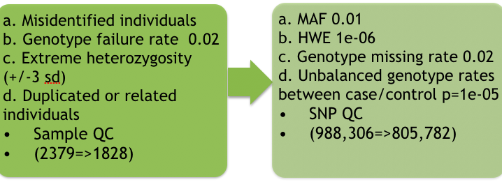
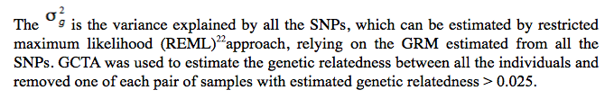
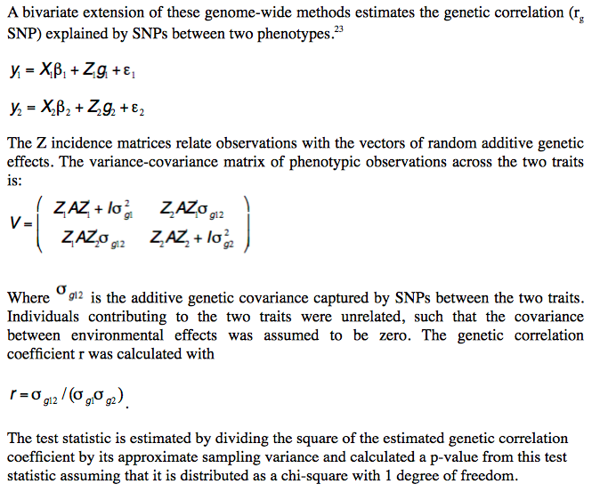
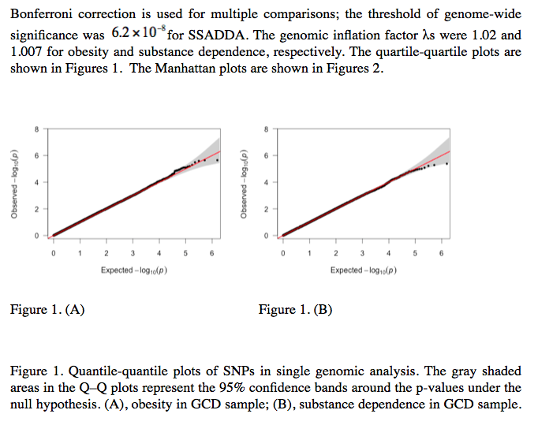

Statistical Analysis of pleiotropy between obesity and substance dependence 
Abstract
To examine the shared genetic risk variants of obesity and substance dependence, a genome-wide data of 1829 individuals was used. The single locus association analysis and mixed effect linear model were applied, the top significant SNP for obesity located in FTO gene, and the top significant SNP for substance dependence located in the OPRM1 gene. Then, the univariate and bivariate methods was conducted to estimate the heritability and genetic correlation. The heritability for obesity and substance dependence is 0.26 and 0.22 respectively. But in this dataset, there is no significant evidence of genetic correlation. Finally, the central nervous system annotation data and pleiotropy information was integrated to prioritizing GWAS results.

Introduction
Obesity has a profound impact on individual physical health and on public health care. The prevalence of obesity in recent years is particularly alarming: More than one-third of U.S. adults (34.9%) are obese with a body mass index of 30 or greater. 1
Obesity normally occurs when the consumed calories exceed the expended calories, this imbalanced energy situation can result from complex genetic and environment factors.2 For a long time, drug and alcohol dependence has been linked to obesity.3 A study suggests that both food and drugs abuse can be influenced by taste, pleasure, habits, social interactions, convenience, availability, and stress. 4
Aside from environment factors, a fast growing consensus is that obesity and substance addition might have similar neurobiological framework in brain.5 Neurotransmitters respond to psychoactive substances are also sensitive to the reinforcing properties of food.6 One study found obese individuals had significantly fewer dopamine D2 receptors than the normal weight counterparts when compared the metabolic activity in the brains of ten obese individuals with ten normal weight individuals.7 These findings suggest that individuals with fewer D2 receptors have to eat more in order to experience the rewarding properties of food intake. Another research suggests that substance addition has the similar dopamine system mechanisms as obesity, as for the individuals with chronic drug and alcohol use disorders, the D2 receptor availability is also significantly reduced in the brains. 8
Several studies have been done to explore the shared genetic susceptibilities of obesity and substance addition. The most widely studied of these has been the dopamine receptor D2 (DRD2) gene.9-11 However, many large analyses have failed to replicate these finding. 12,13
Given our limited understanding of the genetic determinants and metabolic syndrome of obesity and substance addition, the shared risk gene cannot be identified. This paper first performed genome-wide association analyses in 2379 European Americans to identify genetic variants associated with obesity and substance dependence status. Then, mixed linear model was conducted to estimate the total variance in liability explained by SNPs through the estimation of genetic relationship matrix. Next, a bivariate REML method was applied to estimates the genetic correlation explained by SNPs between the two traits with genome-wide single-nucleotide polymorphism data.
Dataset-1: GCD
The GCD samples include 2379 European Americans. All subjects were recruited for studies of the genetics of drug dependence or alcohol dependence. The sample consisted of small nuclear families originally collected for linkage studies, and unrelated individuals. Subjects were recruited at five US clinical sites: Yale University School of Medicine (APT Foundation, New Haven, CT, USA), the University of Connecticut Health Center (Farmington, CT, USA), the University of Pennsylvania Perelman School of Medicine (Philadelphia, PA, USA), the Medical University of South Carolina (Charleston, SC, USA) and McLean Hospital (Belmont, MA, USA). 14All subjects were interviewed using an electronic version of the semi-structured assessment for Drug Dependence and alcoholism (SSADDA)15 to derive diagnoses for major psychiatric traits according to DSM-IV (Diagnostic and Statistical Manual of Mental Disorders, 4th edition) criteria.
Dataset-2: SAGE
Another dataset included is the SAGE data (dbGaP study accession phs000092.v1.p1). In this study, case subjects were identified as having a lifetime history of alcohol dependence using DSM-IV criteria. Control subjects were required to report a history of drinking because alcohol use is required to develop alcohol dependence. Control subjects had no significant alcohol-dependence symptoms. Because of the genetic overlap between alcohol and drug dependence, a diagnosis of drug dependence was an exclusionary criterion for control subjects. The data recruited families with multiple members as well as unrelated individuals of European descent. The subjects came from 9 different sites across the U.S.
Genotyping and Quality Control
Samples for GCD were genotyped on the Illumina HumanOmni1-Quad v1.0 microarray containing 988,306 autosomal SNPs. The samples in SAGE study were genotyped on the Illumina Human1M containing 1040107 SNPs.
Sample quality control including removing related individuals, misidentified individuals, as well as individuals with genotype failure rate of 0.02. After sample quality control, the number of GCD samples reduced from 2379 to 1828, the number of SAGE samples reduced from 2668 to 1840. ( Table 1.).

For SNP quality control, SNPs with allele frequency > 1% were analyzed. A SNP call rate of 98% was required. Hardy–Weinberg equilibrium (HWE) was tested, and SNPs that deviated from HWE (P < 10−6) were excluded. After SNP quality control, the SNP number in GCD samples is 805782; the SNP number in SAGE samples is 845871.
Measurement of BMI and substance dependence
BMI was calculated in each study by dividing height (in meters) by weight (in kilograms) squared.
Substance dependence includes alcohol dependence, nicotine dependence, cocaine dependence, opioid dependence and marijuana dependence. The substance dependence is described through 7 addition symptoms: tolerance to substance; withdrawal from substance; use substance in larger amounts or over longer period than intended; persistent desire or unsuccessful efforts to cut down or control substance use; great amount of time spent in activities necessary to obtain; use or recover from the effects of substance; gave up or reduced important social, occupational, or recreational activities because of substance use. The answer yes means 1 and answer no means 0. For each substance dependence, the score was determined by symptoms account from 0 to 7 by adding up the number of symptoms together. The total substance score is the sum of five substance dependence score ranging from 0 to 35.
Single locus association analysis
Mixed linear model based association analysis
Heritability of obesity and substance dependence
SNP coheritabilities and SNP correlations (r_g SNP)
Integrative analysis of two GWAS datasets and functional annotations
Results
Reference
1Ogden, C. L., Carroll, M. D., Kit, B. K. & Flegal, K. M. Prevalence of childhood and adult obesity in the United States, 2011-2012. JAMA : the journal of the American Medical Association 311, 806-814, doi:10.1001/jama.2014.732 (2014).
2Swinburn, B. A. et al. The global obesity pandemic: shaped by global drivers and local environments. Lancet 378, 804-814, doi:10.1016/S0140-6736(11)60813-1 (2011).
3Holden, C. 'Behavioral' addictions: do they exist? Science 294, 980-982, doi:10.1126/science.294.5544.980 (2001).
4Volkow, N. D. & Wise, R. A. How can drug addiction help us understand obesity? Nature neuroscience 8, 555-560, doi:10.1038/nn1452 (2005).
5Gearhardt, A. N. et al. Neural correlates of food addiction. Archives of general psychiatry 68, 808-816, doi:10.1001/archgenpsychiatry.2011.32 (2011).
6Wise, R. A. Drug self-administration viewed as ingestive behaviour. Appetite 28, 1-5, doi:10.1006/appe.1996.0059 (1997).
7Wang, G. J. et al. Brain dopamine and obesity. Lancet 357, 354-357 (2001).
8Volkow, N. D. & Fowler, J. S. Addiction, a disease of compulsion and drive: involvement of the orbitofrontal cortex. Cerebral cortex 10, 318-325 (2000).
9Munafo, M. R., Matheson, I. J. & Flint, J. Association of the DRD2 gene Taq1A polymorphism and alcoholism: a meta-analysis of case-control studies and evidence of publication bias. Molecular psychiatry 12, 454-461, doi:10.1038/sj.mp.4001938 (2007).
10Zuo, Y. et al. DRD2-related TaqIA polymorphism modulates motivation to smoke. Nicotine & tobacco research : official journal of the Society for Research on Nicotine and Tobacco 11, 1321-1329, doi:10.1093/ntr/ntp141 (2009).
11Doehring, A. et al. Genetic variants altering dopamine D2 receptor expression or function modulate the risk of opiate addiction and the dosage requirements of methadone substitution. Pharmacogenetics and genomics 19, 407-414, doi:10.1097/FPC.0b013e328320a3fd (2009).
12Smith, L., Watson, M., Gates, S., Ball, D. & Foxcroft, D. Meta-analysis of the association of the Taq1A polymorphism with the risk of alcohol dependency: a HuGE gene-disease association review. American journal of epidemiology 167, 125-138, doi:10.1093/aje/kwm281 (2008).
13Munafo, M. R., Timpson, N. J., David, S. P., Ebrahim, S. & Lawlor, D. A. Association of the DRD2 gene Taq1A polymorphism and smoking behavior: a meta-analysis and new data. Nicotine & tobacco research : official journal of the Society for Research on Nicotine and Tobacco 11, 64-76, doi:10.1093/ntr/ntn012 (2009).
14Gelernter, J. et al. Genomewide linkage scan for cocaine dependence and related traits: significant linkages for a cocaine-related trait and cocaine-induced paranoia. American journal of medical genetics. Part B, Neuropsychiatric genetics : the official publication of the International Society of Psychiatric Genetics 136B, 45-52, doi:10.1002/ajmg.b.30189 (2005).
15Pierucci-Lagha, A. et al. Diagnostic reliability of the Semi-structured Assessment for Drug Dependence and Alcoholism (SSADDA). Drug and alcohol dependence 80, 303-312, doi:10.1016/j.drugalcdep.2005.04.005 (2005).
16Runeson, B. S. & Rich, C. L. Diagnostic and statistical manual of mental disorders, 3rd ed. (DSM-III), adaptive functioning in young Swedish suicides. Annals of clinical psychiatry : official journal of the American Academy of Clinical Psychiatrists 6, 181-183 (1994).
17Pierucci-Lagha, A. et al. Reliability of DSM-IV diagnostic criteria using the semi-structured assessment for drug dependence and alcoholism (SSADDA). Drug and alcohol dependence 91, 85-90, doi:10.1016/j.drugalcdep.2007.04.014 (2007).
18Bierut, L. J. et al. A genome-wide association study of alcohol dependence. Proceedings of the National Academy of Sciences of the United States of America 107, 5082-5087, doi:10.1073/pnas.0911109107 (2010).
19Purcell, S. et al. PLINK: a tool set for whole-genome association and population-based linkage analyses. American journal of human genetics 81, 559-575, doi:10.1086/519795 (2007).
20Yang, J., Lee, S. H., Goddard, M. E. & Visscher, P. M. GCTA: a tool for genome-wide complex trait analysis. American journal of human genetics 88, 76-82, doi:10.1016/j.ajhg.2010.11.011 (2011).
21Stranden, I. & Garrick, D. J. Technical note: Derivation of equivalent computing algorithms for genomic predictions and reliabilities of animal merit. Journal of dairy science 92, 2971-2975, doi:10.3168/jds.2008-1929 (2009).
22Zhang, Q., Zhang, Y., Liu, Z. & Haussmann, H. [Comparison of MIVQUE and REML with Monte Carlo simulation]. Yi chuan xue bao = Acta genetica Sinica 22, 424-430 (1995).
23Lee, S. H. et al. Estimating the proportion of variation in susceptibility to schizophrenia captured by common SNPs. Nature genetics 44, 247-250, doi:10.1038/ng.1108 (2012).
24Yang, J. et al. Genome partitioning of genetic variation for complex traits using common SNPs. Nature genetics 43, 519-525, doi:10.1038/ng.823 (2011).
25Nicolae, D. L. et al. Trait-associated SNPs are more likely to be eQTLs: annotation to enhance discovery from GWAS. PLoS genetics 6, e1000888, doi:10.1371/journal.pgen.1000888 (2010).
26Ott, J. Counting methods (EM algorithm) in human pedigree analysis: linkage and segregation analysis. Annals of human genetics 40, 443-454 (1977).
27Dina, C. et al. Variation in FTO contributes to childhood obesity and severe adult obesity. Nature genetics 39, 724-726, doi:10.1038/ng2048 (2007).
28Patel, S. D. et al. Coming to grips with complex disorders: genetic risk prediction in bipolar disorder using panels of genes identified through convergent functional genomics. American journal of medical genetics. Part B, Neuropsychiatric genetics : the official publication of the International Society of Psychiatric Genetics 153B, 850-877, doi:10.1002/ajmg.b.31087 (2010).
29Kimura, M. & Higuchi, S. Genetics of alcohol dependence. Psychiatry and clinical neurosciences 65, 213-225, doi:10.1111/j.1440-1819.2011.02190.x (2011).
30Llewellyn, C. H., Trzaskowski, M., Plomin, R. & Wardle, J. Finding the missing heritability in pediatric obesity: the contribution of genome-wide complex trait analysis. International journal of obesity 37, 1506-1509, doi:10.1038/ijo.2013.30 (2013).
31Vrieze, S. I., McGue, M., Miller, M. B., Hicks, B. M. & Iacono, W. G. Three mutually informative ways to understand the genetic relationships among behavioral disinhibition, alcohol use, drug use, nicotine use/dependence, and their co-occurrence: twin biometry, GCTA, and genome-wide scoring. Behavior genetics 43, 97-107, doi:10.1007/s10519-013-9584-z (2013).